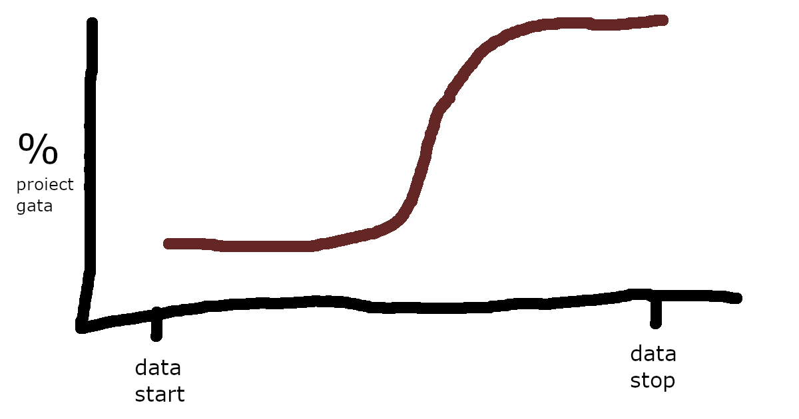

De ce proiectul nu progresează?
by Adrian Harabulă on 15 February, 2020
Atunci când lucrezi la un proiect, este foarte probabil ca cel puțin prima jumătate a lui să nu ai niciun progres. Ba mai mult, s-ar părea ca majoritatea timpului să fie petrecut cu probleme neprevăzute. Asta se întâmplă pentru că progresul nu prea e la început când încă îți dai seama ce faci, ci mult mai încolo când tot ce ai lucrat până atunci (și aparent nu mergea) se cumulează și începe să ia formă, deodată.
El arată cam așa:

Abia pe la jumătatea proiectului productivitatea crește exponențial și lucrurile încep să se stabilizeze. Este și perioada cea mai faină a proiectului. Nu durează totdeauna asta, mai apoi spre final, productivitatea stagnează iar. Atunci este și momentul ca să treci la următorul proiect.